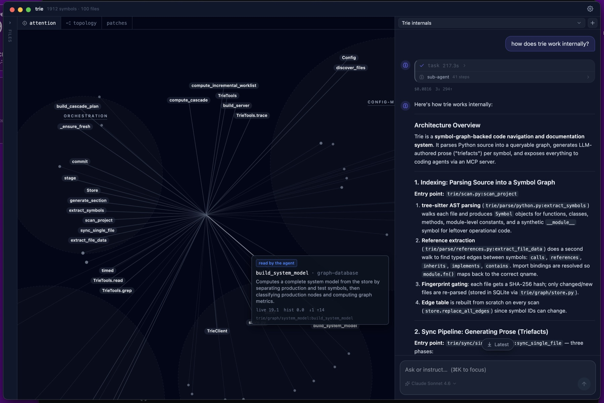
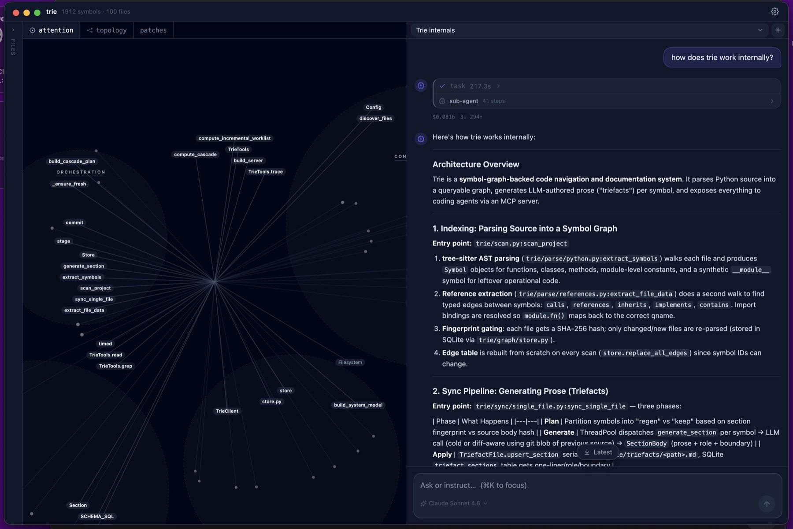
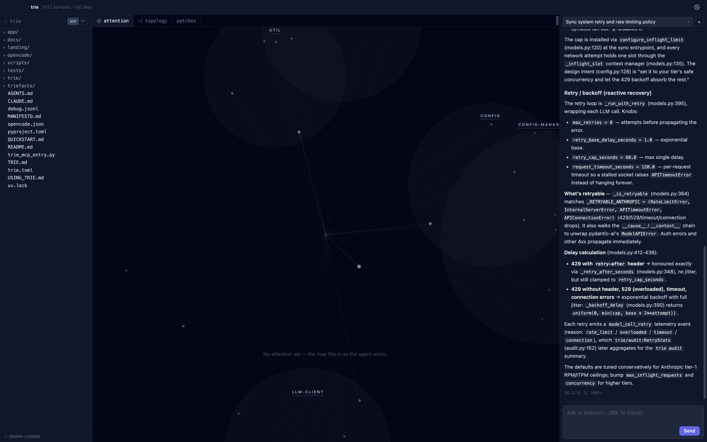

A macOS editor with an embedded coding agent — built around a live map of where the agent is thinking. Every read, grep, trace, and edit deposits decaying attention mass on the symbols it touches. The map glows around the agent's focus and fades as attention moves on.
A call graph shows what the code is. The attention map shows what the agent is doing with it — a turn-by-turn picture of machine focus. Symbols keep a fixed angular geography (their place in the system's topology), while the live field resets with every prompt: each question you ask opens a fresh investigation, and you watch it unfold.
Each tool call deposits mass on the symbols it touches. Mass glows, spreads to neighbors, and decays — focus is visible, and so is forgetting.
Symbols cluster by role — config, storage, sync, parse — in stable polar regions. You learn the map of your system the way you learn a city.
The agent's staged, symbol-level edits land in a review surface as prose. You read what a change means, not a raw diff.
Real frames from real sessions — trie's own codebase (1,912 symbols, 100 files), with the embedded agent answering questions about the system it's standing in.



AGM consumes trie as an installed dependency — the prose graph, the reference cascade, and the MCP tools all come from the open-source core. The embedded agent runs on a fork of opencode where trie's tools are the default toolset, and the map listens to the agent's event stream in real time.
Status: experimental, macOS, moving fast. The stable product is the trie core (MIT).
{kind=link}
{kind=link}
{kind=link}